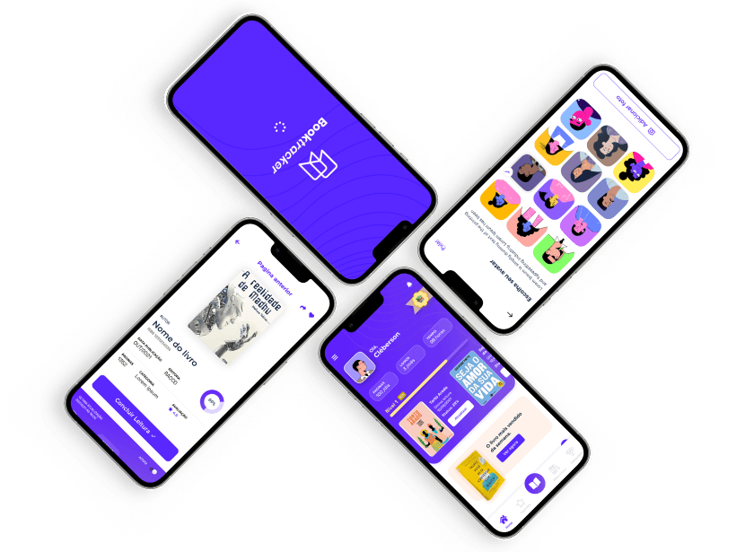
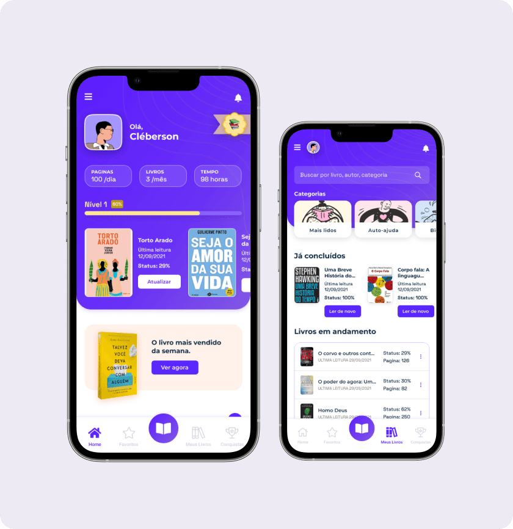
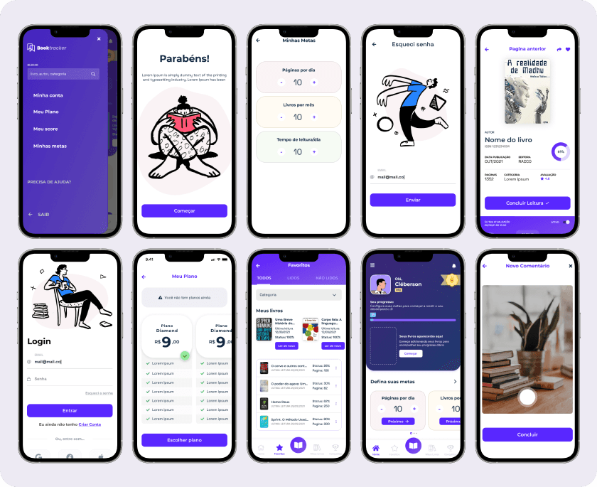
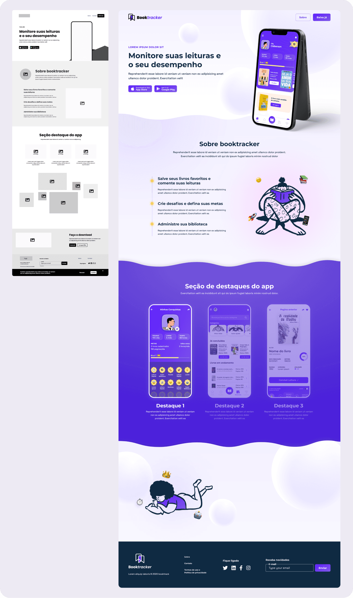

Booktracker

A reading tracker for book lovers
The app
A gamified app that encourages people to dedicate time to reading by tracking the daily time they spend with books — from onboarding and the reading timer to the library and achievements.


The landing page
A promotional landing page that presents the product and its gamified reading experience to future readers.
